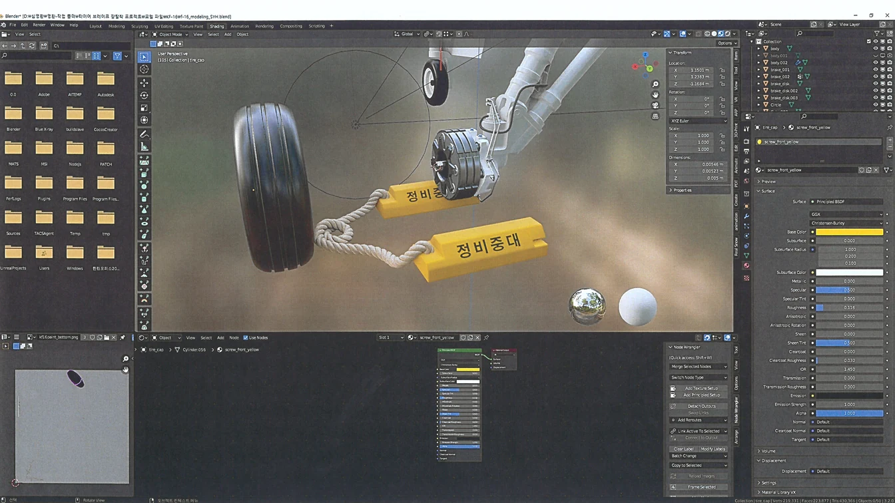
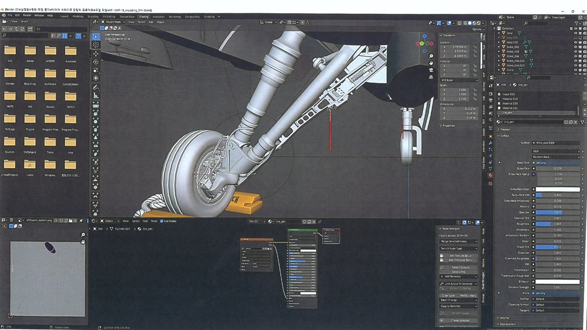
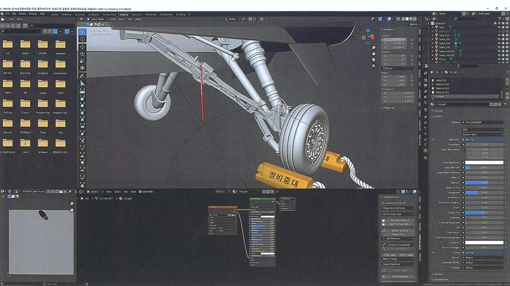
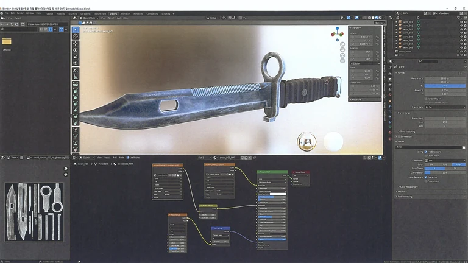
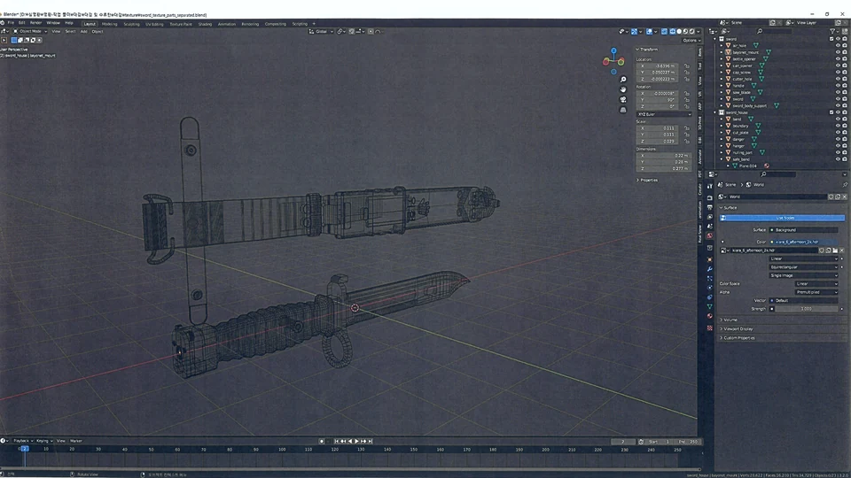
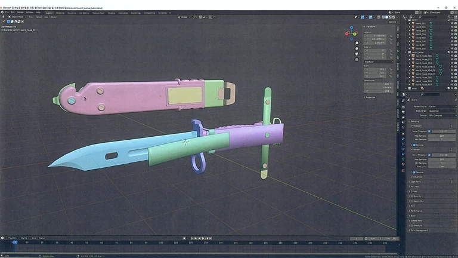

교육용 3D 에셋
교관이 구조를 설명하고 교육생이 절차를 이해할 수 있도록 제작한 공군 교육 콘텐츠용 모델링.

01 / Landing gear
KF-16 타이어·브레이크
VR에서 교육생이 타이어와 브레이크의 장탈착 순서를 직접 익히는 교육 콘텐츠입니다. 약 2개월 동안 타이어, 전투기 다리와 브레이크의 모델링·텍스처링을 담당했습니다. 작동 구조를 이해하기 위한 자료 조사와 현장 관찰을 모델에 반영했습니다.


02 / Training prop
대검 모델링과 PBR
교관이 모델을 회전하거나 확대하며 설명할 수 있도록 대검을 제작했습니다. 약 3주 동안 모델링과 텍스처링을 진행하며 PBR 재질, 베이킹과 페인팅을 적용했습니다.


03 / Texture workflow
채널 패킹으로 리소스 정리
세 종류의 맵을 한 텍스처의 R·G·B 채널에 각각 저장하고 Unity에서 필요한 채널을 추출해 사용했습니다. 여러 맵을 하나의 텍스처로 통합하는 제작 방식을 적용했습니다.

CREDITS & SCOPE
기여 범위와 작업 기록
공군 교육 콘텐츠 제작에서 담당한 모델링·텍스처링 범위입니다. VR 교육 시스템 전체를 단독 개발한 작업은 아닙니다.
기록 기준: 2026.10 포트폴리오, 19–20쪽.